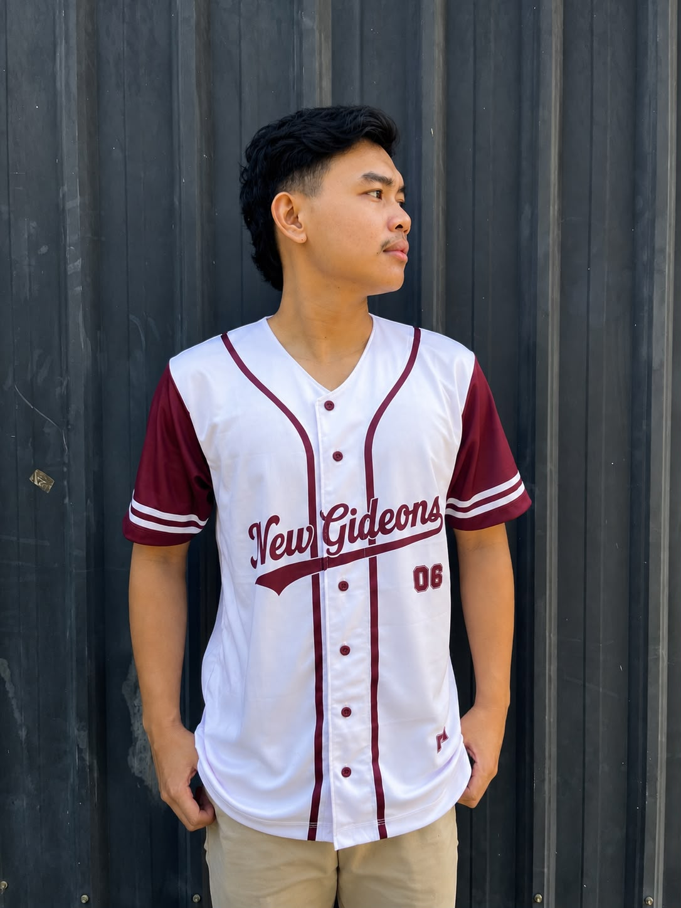
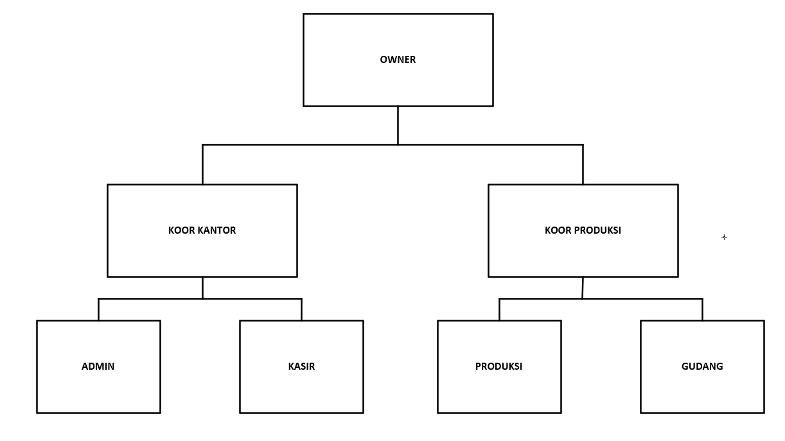
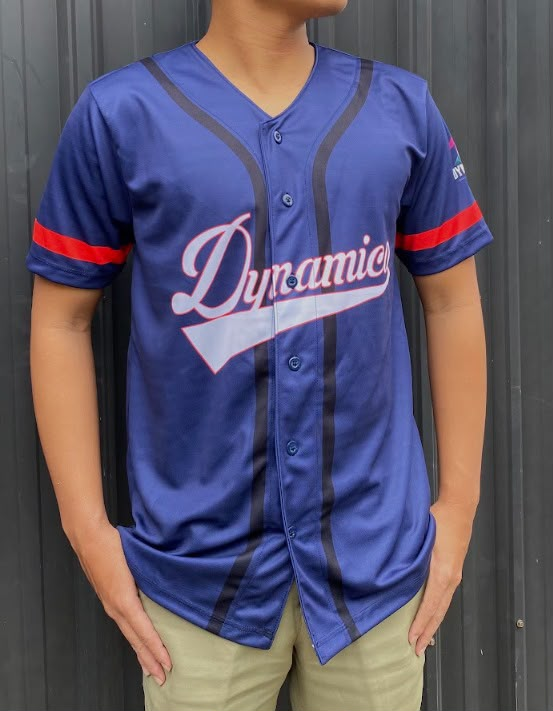
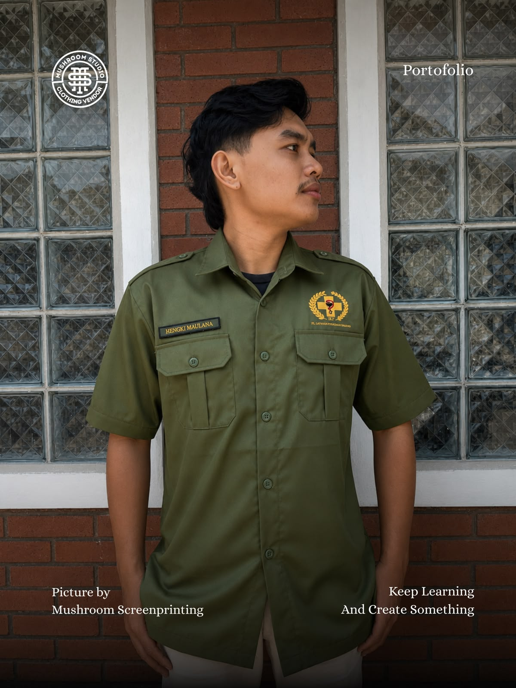
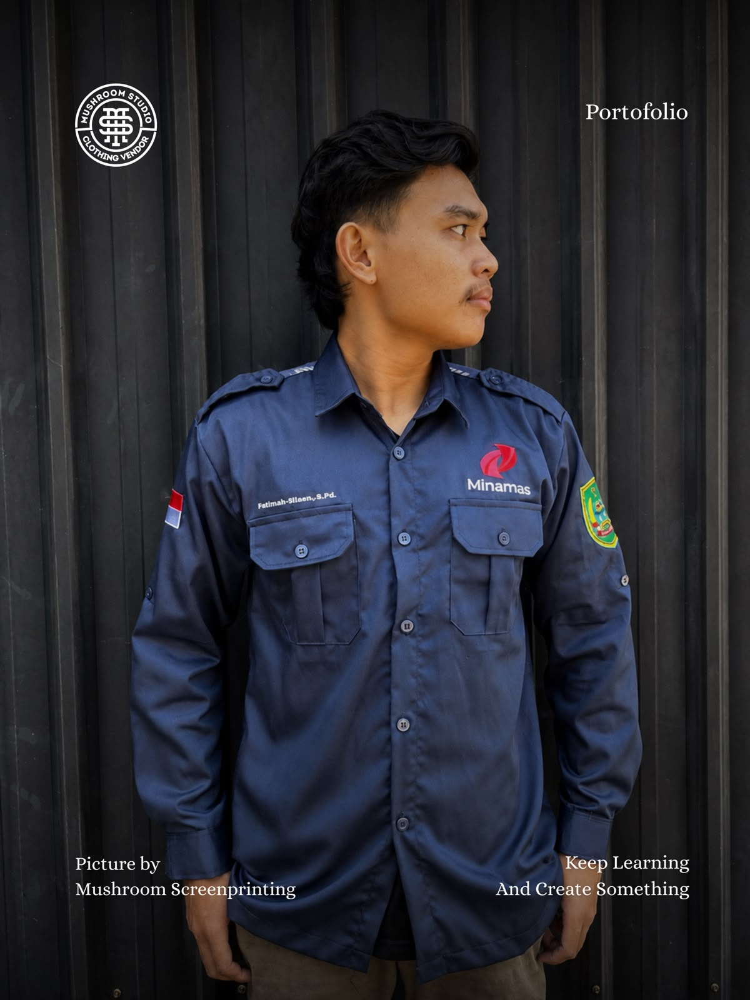
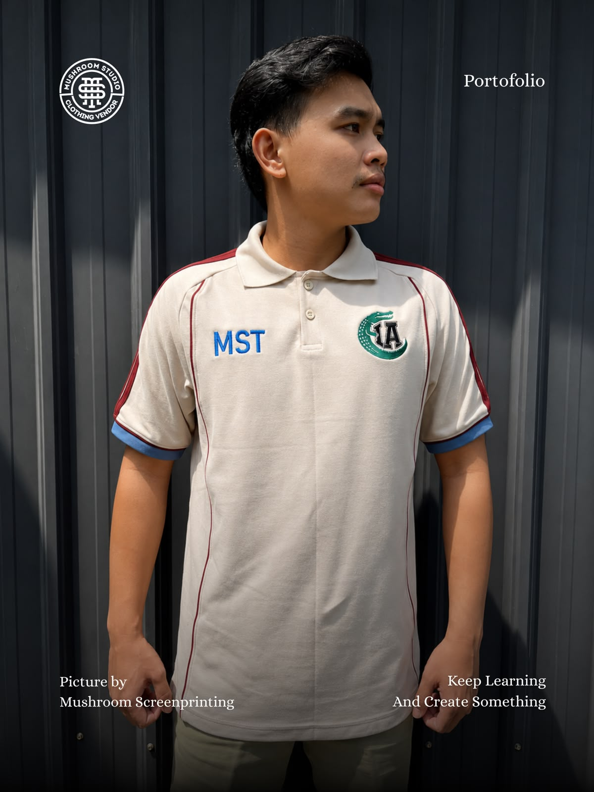
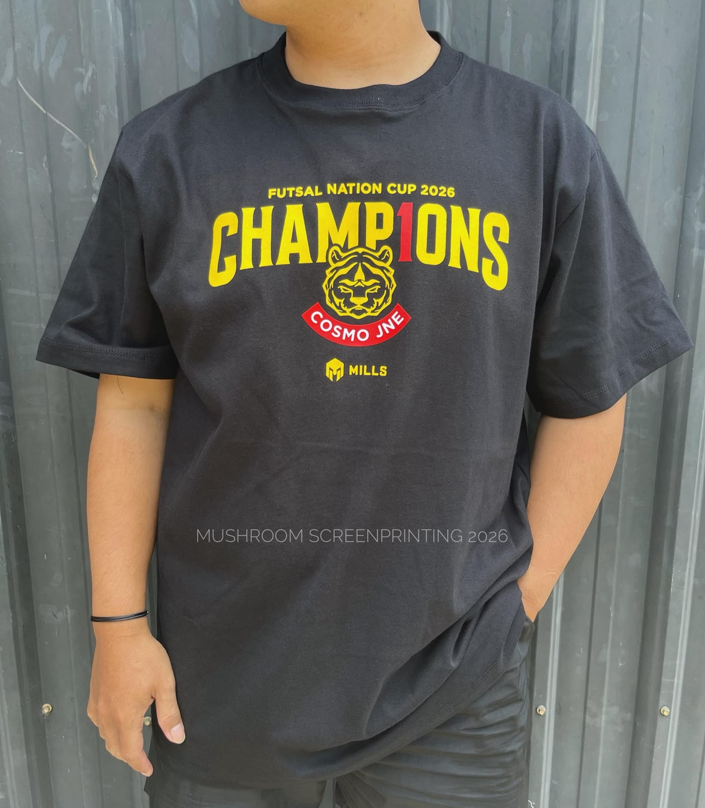
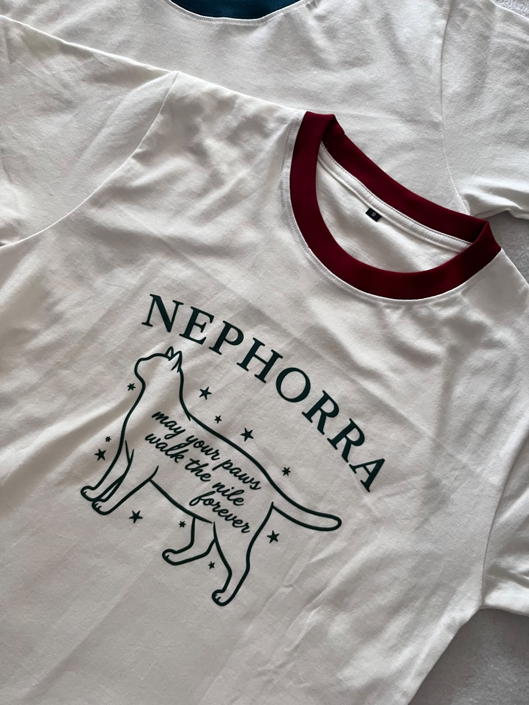

Mushroom Screenprint
Studio Sablon dan Apparel
Melayani pembuatan berbagai jenis pakaian custom, seperti kaos, jersey, kemeja, dan polo shirt sesuai kebutuhan pelanggan.
Lihat ProdukSejarah Mushroom Screenprint
Mushroom Screenprint berawal pada tahun 2015 dari ketertarikan terhadap dunia fashion, khususnya kaos distro yang saat itu semakin menarik perhatian. Seiring berjalannya waktu, ketertarikan tersebut berkembang menjadi keinginan untuk memiliki dan mengembangkan produksi pakaian sendiri. Dari keinginan tersebut, muncul rasa ingin tahu yang lebih besar mengenai proses pembuatan kaos, mulai dari mengenal berbagai jenis bahan kain, karakteristik material, hingga mempelajari bagaimana sebuah desain dapat diterapkan pada pakaian.
Berawal dari proses belajar dan mengenal dunia produksi pakaian, Mushroom Screenprint kemudian mulai mengembangkan usahanya di bidang sablon dan apparel. Pengembangan tersebut dilakukan dengan memperhatikan kualitas bahan, kesesuaian desain, serta hasil pengerjaan agar dapat memenuhi kebutuhan pelanggan. Hingga saat ini, Mushroom Screenprint terus berupaya memberikan layanan produksi sablon dan apparel yang dapat disesuaikan dengan keinginan pelanggan, baik dari segi desain maupun pilihan pakaian yang digunakan.
Struktur Organisasi

Produk Kami
Beberapa contoh produk apparel dan sablon Mushroom Screenprint.

Jersey Custom

Kemeja Kerja

Kemeja Custom

Polo Shirt

Kaos Sablon

Kaos Custom
Testimoni
Kepuasan pelanggan menjadi motivasi kami untuk terus memberikan hasil terbaik.
Alamat
Kontak
Untuk informasi dan pemesanan produk, silakan hubungi Mushroom Screenprint.